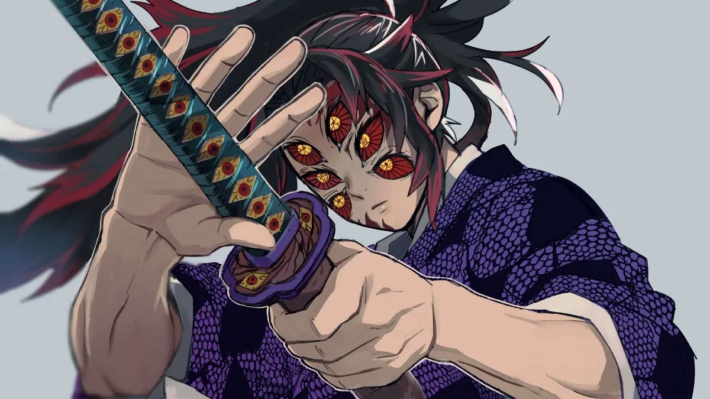
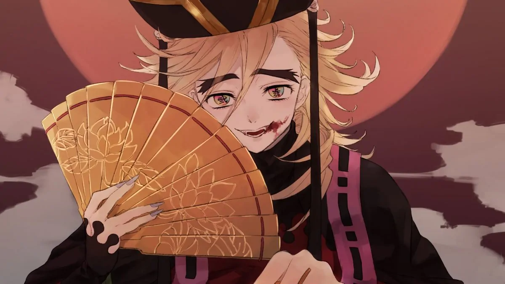
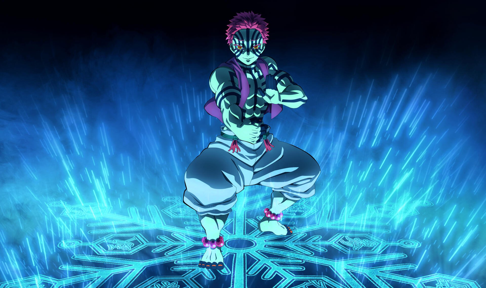
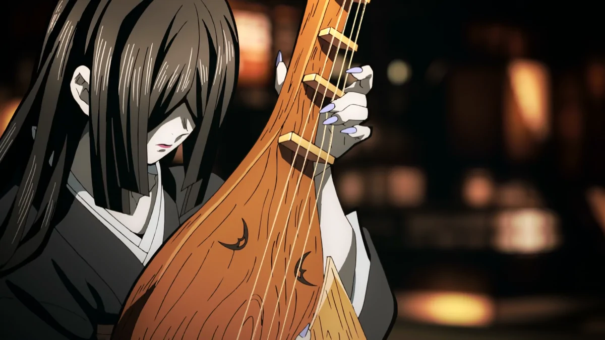
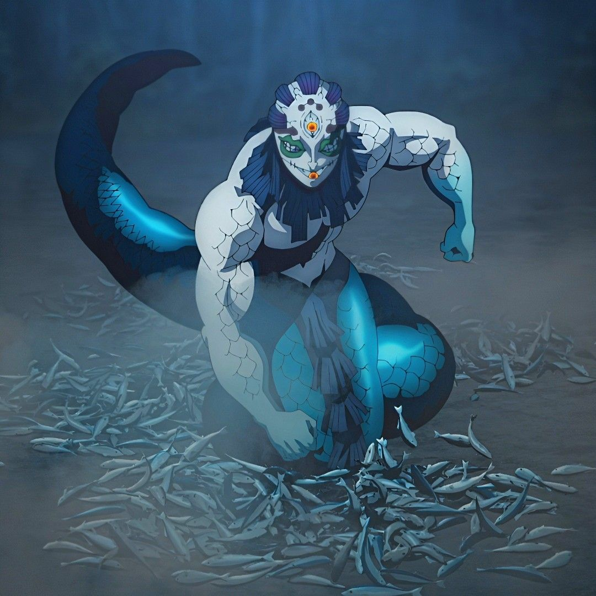
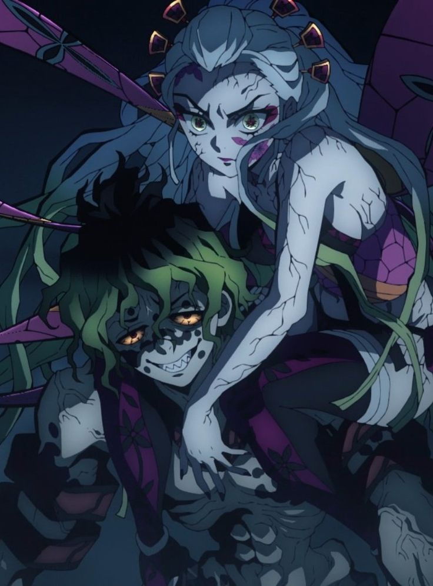
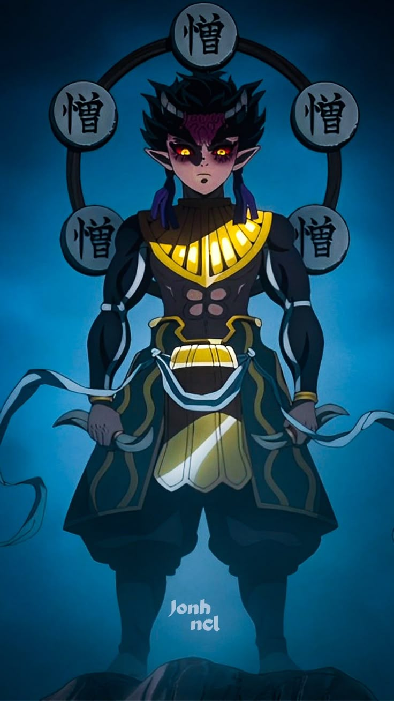
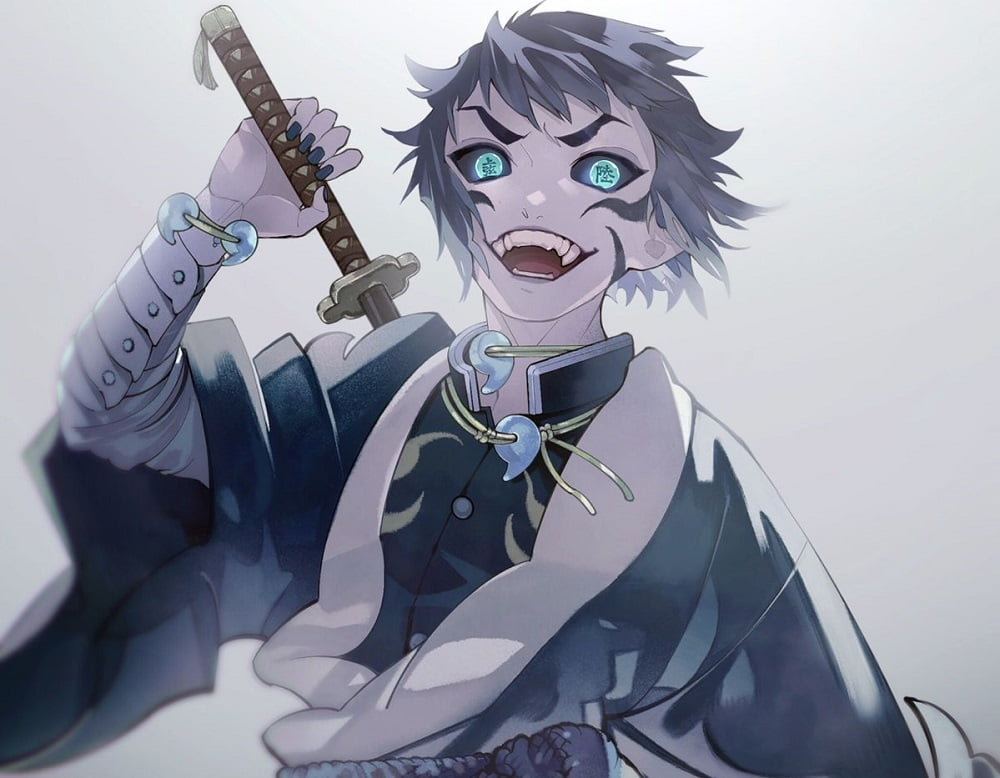

As Luas Superiores
Todas as Luas são classificadas de 1 a 6 de acordo com seu nível de poder e todos eles possuem sua numeração gravada em seus olhos. As Luas Superiores que são as mais poderosas possuem sua numeração em um olho e a palava Superior no outro, já as Luas Inferiores que são as mais fracas possuem somente sua numeração em um dos olho.
Kokushibo - Lua Superior 1

Estilo de Luta: Moon Breathing (Respiração da Lua derivada da Sun Breathing)
Habilidades: É o demônio mais poderoso depois de Muzan, com força, velocidade e regeneração supremas. Possui múltiplas lâminas curvadas saindo de seu corpo que cortam anything in their path. Seu sangue demoníaco permite manipulação lunar e cortes impossíveis de rastrear.
História: O mais forte de todos os demônios criados por Muzan, incluindo as Luas Superiores. Assim como Kaigaku, Kokushibo também era um caçador de demônios antes de trair a organização e se tornar um subordinado de Muzan, sendo extremamente frio, calculista, rápido e com uma força descomunal. Além disso, Kokushibo é o irmão mais velho de Yoriichi, o caçador mais poderoso que já existiu e que causa um frio na espinha de Muzan até hoje.
Douma - Lua Superior 2

Estilo de Luta: Breath of Light (Respiração da Luz) / Crystal Breathing
Habilidades: Empunha uma arma com uma lâmina de cristal que reflete e refrata a luz, ofuscando e cegando os inimigos. Possui uma percepção surpreendentemente aguçada dos sentimentos humanos, usando psicologia e manipulação contra suas vítimas antes de atacar.
História: Douma era um demônio frio e psicopático que desprezava a humanidade e a vida em geral. Matou Kanae Kocho (irmã de Shinobu) e tornou-se Upper Moon 2, um demônio que despreza a dor e a morte como se fossem meras abstrações. Foi eventualmente derrotado por Shinobu Kocho, Kanao e Inosuke.
Akaza - Lua Superior 3

Estilo de Luta: Compass Needle + Destructive Death (Punhal da B ussola + Morte Destrutiva)
Habilidades: Mestre em artes marciais de combate corpo a corpo, Akaza pode detectar o "poder de luta" (killing intent) dos seus oponentes e calcular fraquezas no meio da batalha. Suas pernas são sua maior arma, com chutes devastadores que destroem ossos e órgãos internos. Regeneração extremamente rápida.
História: Originalmente Hakuji, um jovem prodígio das artes marciais que se tornou um demonio após testemunhar a morte do seu mestre e da mulher que amava. Desde então, passou mais de um século buscando oponentes fortes, acreditando que a fraqueza é o único pecado verdadeiro. Foi derrotado por Giyu Tomioka e Tanjiro Kamado.
Nakime - Lua Superior 4

Estilo de Luta: Manipulação Espacial do Castelo Infinito
Habilidades: Ela controla o Castelo Infinito de Muzan, podendo alterar a estrutura espacial do interior da fortaleza, redirecionar ataques e manipular o terreno a seu favor.
História: Antes de se tornar uma Lua Superior, Nakime era uma humana biwa hoshi (músico itinerante de biwa) que vivia isolada das outras pessoas por sua aparência. Muzan a transformou em demônio e a colocou como Upper Moon 4, usando seu dom de manipulação espacial para comandar o Castelo Infinito durante o confronto final com os Caçadores de Demônios.
Gyokko - Lua Superior 5

Estilo de Luta: Water Habitat + Blood Demon Art: Vessel Monsters
Habilidades: Gyokko tem o dom de criar criaturas monstruosas dentro de vasos de cerâmica. Essas criaturas variam de peixes mutantes a dragões em miniatura, cada uma com habilidades únicas de ataque. Ele também possui uma habilidade de manipulação de água e pode fundir-se com seus vasos para se teletransportar.
História: Gyokko é um demônio excêntrico e sádico com uma obsessão pela arte e pela beleza grotesca. Ele cria suas criaturas vasculhando os corpos de seus aldeões e transformando-os em vasos de cerâmica vivos. Foi derrotado por Muichiro Tokito e Mitsuri Kanroji.
Daki & Gyutaro - Lua Superior 6 (Anteriormente)

Estilo de Luta: Daki - Obi (Fita) Whipping; Gyutaro - Scythe Blood Demon Art + Wisteria Poison
Habilidades: Daki manipula 6 fitas obi (cintos) de tecido que podem cortar como lâminas, cada uma afilada o suficiente para decapitar um Hashira. Gyutaro usa uma foice gigante e envenena seus oponentes com o néctar de flores de glicínia que cobre sua foice, causando paralisia e morte lenta. Juntos, são uma força combinada devastadora.
História: Irmãos do Distrito da Luz Vermelha de Yoshiwara, Daki e Gyutaro foram abandonados e abusados pela mãe de ambos, levando vidas marcadas por pobreza e violência. Quando Muzan os transformou em demônios e os tornou Luas Superiores, encontraram poder e respeito que nunca tiveram como humanos. Foram derrotados separadamente por Tanjiro Kamado e os outros Caçadores de Demônios.
Hatengu – Antiga Lua Superior 4

Estilo de Luta: Blood Demon Art: Clone Separation
Habilidades: Hatengu pode dividir seu corpo em cinco clones diferentes, cada um com habilidades únicas. Esses clones podem se regenerar e são capazes de lutar individualmente. Ele também possui uma habilidade de teletransporte e pode se mover rapidamente por distâncias curtas.
História: Hatengu é um demônio covarde e manipulador que serviu Muzan durante mais de um século. Ele é mestre em enganar seus oponentes e em escapar da batalha sempre que possível. Foi derrotado por Tanjiro Kamado e Nezuko Kamado.
Kaigaku – Antiga Lua Superior 6

Estilo de Luta: Blood Demon Art: Thunderclap and Flash
Habilidades: Kaigaku tem a capacidade de gerar correntes elétricas a partir de seus ataques de espada, cada um acompanhado por um flash cegante. Ele pode controlar a quantidade de eletricidade que gera, variando de pequenos choques a correntes poderosas.
História: Kaigaku era um ex-membro do Esquadrão de Caçadores de Demônios e colega de Zenitsu Agatsuma. Ele se juntou ao esquadrão para obter poder e proteção, mas se sentia inferior a Zenitsu e resentido por não ser reconhecido. Quando teve a chance de evoluir, traiu seus companheiros e se tornou um demônio, servindo Muzan como Lua Superior 6 temporariamente. Foi derrotado por Zenitsu durante a batalha final no Castelo Infinito.